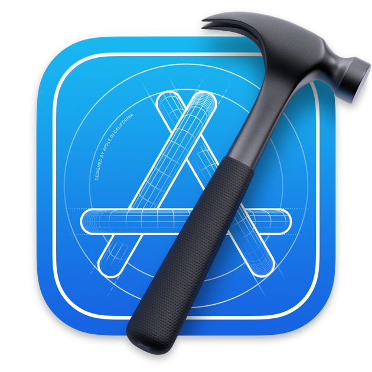

Bank And YOU
Introduction

Lors de ma première année de BTS SIO en cours d'algorithme appliqué, le professeur nous a mis au défi de réaliser un projet informatique avec les BTS Banque/Assurance. Ainsi plusieurs projets ont été proposé par les BTS Banque/Assurance.Le but était de respecter un cahier des charges, comprendre la demande d'un client qui n'était pas d'un milieu informatique et travailler en équipe
Objectifs
Développer une application mobile permettant à l'utilisateur de pouvoir calculer les intérêts de son épargne, pouvoir estimer ses mensualités pour un futur crédit.
Outils Utilisés

Apple MacbookPro macOS 12.11
- 
Xcode : Environnement de développement pour le développement d'application pour les différents OS D'apple tels que macOS, tvOS, iOS, watchOS

TestFlight est un service en ligne pour l'installation et le test en direct des applications mobiles, actuellement détenu par Apple Inc et uniquement proposé aux développeurs dans le cadre du programme pour développeurs iOS

Swift est un langage de programmation objet, principalement utilisé pour le développement d'application pour l'ecoSystème d'Apple

GitHub est une plateforme d'hébergement de code pour le contrôle de version et la collaboration. Elle permet, ainsi qu'à d'autres personnes, de travailler ensemble sur des projets, où que vous soyez, Github propose également un service de question réponses sur le développement informatique

Stack Overflow est un site web proposant des questions et réponses sur un large choix de thèmes concernant la programmation informatique.
Capture d'écran de l'application
Apport du projet
Ce projet m'a permis de :- Respecter les demandes d'un client qui n'a aucune expérience en informatique.- Travailler en équipe- Diriger un projet (répartition des tâches, gestion du temps...)
Problèmes rencontrés
N'ayant aucune connaissance en Banque et Assurance, comprendre les différentes formules de calcul de mensualité et d'intérêt ont été difficile à assimiler. La communication avec les éléves de BTS BANQUE a donc été très importante
Conclusion
Ce projet facultatif est mon premier projet concret, mais également ma première application mobile (iOS). Le choix de l'OS et des différentes méthodes pour développer l'application ne m'ont pas été imposé. J'ai donc fait le choix du développement natif iOS avec Swift. Cela m'a donc fait une première experience dans le développement mobile et ma permis de faire un petit pas dans la gestion de projet ainsi que son organisation.